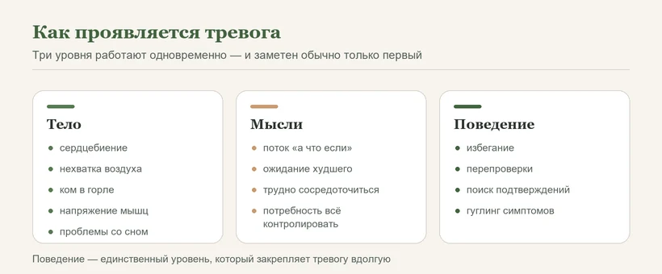
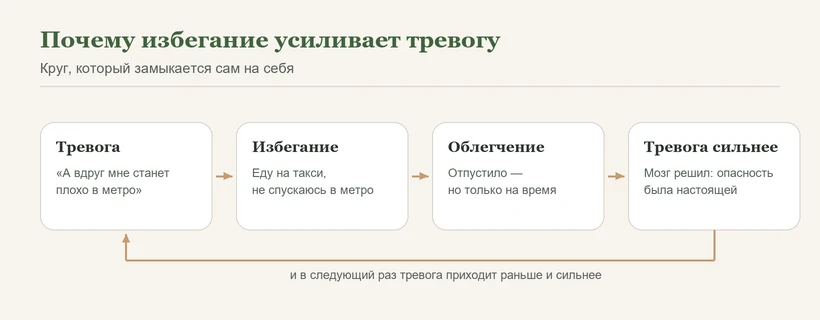
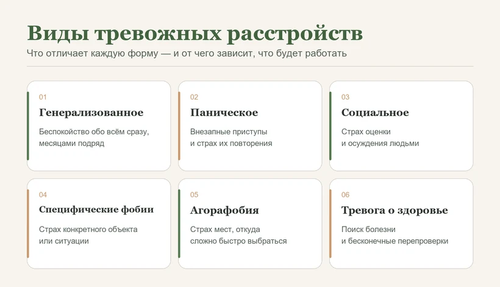
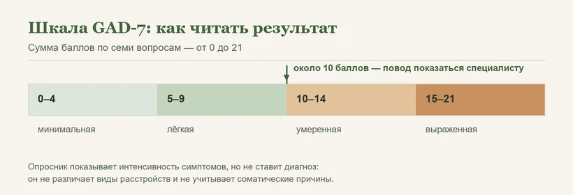

Главная → Блог → Тревожное расстройство
Тревожное расстройство: виды, симптомы, причины и лечение
Обновлено: 08.08.2026 · 12 минут чтения
Тревожное расстройство — это состояние, при котором тревога перестаёт быть соразмерной поводу, держится месяцами и начинает ограничивать жизнь. Отличие от обычной тревожности не в силе переживания, а в трёх вещах: несоразмерности, длительности и в том, что человек начинает подстраивать под тревогу свои решения. Это самая распространённая группа психических расстройств — и одна из тех, что лучше всего поддаются лечению.
Чем тревожное расстройство отличается от тревоги
Тревога сама по себе — не поломка, а рабочая функция психики. Это реакция на возможную угрозу в будущем: организм запускает «бей или беги», выбрасывается адреналин, учащается пульс, напрягаются мышцы, внимание сужается до источника опасности. В умеренных дозах она полезна — заставляет готовиться к экзамену, проверять документы, притормаживать на скользкой дороге.
Граница между нормой и расстройством проходит не по силе ощущений. Человек без всяких расстройств может пережить очень сильную тревогу перед операцией, и это нормально. Специалисты смотрят на другое:
| Обычная тревога | Признак расстройства | |
|---|---|---|
| Соразмерность | Сила реакции соответствует поводу | Реакция сильнее повода или повода нет вовсе |
| Длительность | Проходит вместе с ситуацией | Держится месяцами, фоном |
| Влияние на жизнь | Жизнь идёт своим чередом | Мешает работать, спать, общаться |
| Поведение | Человек делает то, что собирался | Появляются избегание и перепроверки |
Последняя строка — самая показательная. Именно перестройка жизни под тревогу отличает расстройство: человек перестаёт ездить в метро, отказывается от повышения, где нужны выступления, не идёт к врачу из страха услышать диагноз, звонит близким по десять раз, чтобы убедиться, что всё в порядке. Тревога из переживания превращается в то, что принимает за вас решения.
По данным Всемирной организации здравоохранения, в 2019 году с тревожными расстройствами жили около 301 миллиона человек — это самая многочисленная группа психических расстройств в мире. При этом помощь получает лишь примерно каждый четвёртый из тех, кому она нужна. Женщины сталкиваются с ними примерно вдвое чаще мужчин.
Симптомы: тело, мысли, поведение
Тревожное расстройство проявляется одновременно на трёх уровнях. Понимать это важно по практической причине: люди годами ходят по кардиологам и гастроэнтерологам, потому что замечают только телесный уровень.

Тело
Сердцебиение, стеснение в груди, ком в горле, нехватка воздуха и желание вдохнуть поглубже, потливость, дрожь, головокружение, напряжение в плечах, шее и челюсти, тошнота и расстройство пищеварения, частые позывы в туалет, трудности с засыпанием. При длительной тревоге добавляются постоянная усталость и мышечные боли — мышцы месяцами находятся в тонусе.
Все эти ощущения — не выдумка и не «накрутка»: это реальная физиология стрессовой реакции. Именно поэтому они так убедительно пугают.
| Что чувствуется | Что за этим стоит |
|---|---|
| Сердце колотится, «выпрыгивает» | Адреналин ускоряет пульс, чтобы мышцы получили больше крови |
| Не хватает воздуха | Дыхание учащается и становится поверхностным; кислорода при этом достаточно |
| Головокружение, «ватность» | Следствие частого поверхностного дыхания |
| Ком в горле, стеснение в груди | Напряжение мышц гортани и грудной клетки |
| Тошнота, спазмы в животе | Организм притормаживает пищеварение — сейчас оно «не приоритет» |
Мысли
Непрерывный поток «а что если», ожидание худшего сценария, прокручивание одних и тех же ситуаций, трудности с концентрацией — прочитали страницу и не помните о чём. Часто присутствует ощущение, что беспокойство защищает: «если я всё продумаю заранее, я подготовлюсь». На деле беспокойство и подготовка — разные вещи: подготовка заканчивается действием, беспокойство идёт по кругу.
Поведение
Здесь находится главный механизм, который удерживает расстройство. Избегание (не ехать, не звонить, не выступать), перепроверки (перечитать письмо десять раз, вернуться и проверить утюг), поиск подтверждений у близких, гуглинг симптомов, «страховки» вроде таблетки в кармане, без которой страшно выйти из дома.
Каждое такое действие приносит облегчение за минуты — и именно поэтому закрепляется. Но мозг делает из него вывод: опасность была настоящей, и обошлось только потому, что я не поехал. В следующий раз тревога будет сильнее. Так расстройство само себя подпитывает — и по этой же причине лечение почти всегда включает постепенный возврат в избегаемые ситуации.

Шесть видов тревожных расстройств
Диагноз ставит только врач или клинический психолог. Но понимать, чем формы отличаются, полезно: от этого напрямую зависит, что именно будет работать.

Генерализованное тревожное расстройство (ГТР)
Фоновое беспокойство сразу обо всём: здоровье, деньги, дети, работа, будущее. Тема меняется, состояние остаётся. Человек описывает это словами «я всегда о чём-то тревожусь» и часто считает это чертой характера, а не проблемой. Типичны мышечное напряжение, усталость, раздражительность и нарушения сна.
Ориентир: беспокойство присутствует большую часть дней на протяжении не менее полугода, и его трудно контролировать.
Паническое расстройство
Повторяющиеся неожиданные приступы сильного страха с яркими телесными симптомами: сердцебиение, нехватка воздуха, дрожь, ощущение нереальности происходящего. Приступ достигает пика за несколько минут. Ключевая часть расстройства — не сами приступы, а то, что появляется между ними: страх нового приступа и перестройка жизни ради его предотвращения.
Социальное тревожное расстройство (социофобия)
Выраженный страх ситуаций, где человека могут оценивать: выступления, звонки, знакомства, еда в общественном месте, даже вопрос коллеге. В основе — ожидание осуждения и уверенность, что окружающие заметят волнение и сочтут его позорным. Часто маскируется под «я просто интроверт», хотя разница принципиальна: интроверту общение не нужно в больших количествах, а при социальной тревожности его хочется, но страшно.
Рядом: низкая самооценка и одиночество — частые спутники.
Специфические фобии
Интенсивный страх конкретного объекта или ситуации: высота, полёты, замкнутые пространства, собаки, уколы и вид крови, стоматолог. Человек обычно понимает, что страх несоразмерен, но само по себе это понимание не помогает. Фобии — из тех состояний, где терапия даёт наиболее быстрый и наглядный результат.
Агорафобия
Вопреки расхожему «боязнь открытых пространств», суть в другом: это страх оказаться там, откуда сложно быстро выбраться или где не помогут, если станет плохо. Транспорт, очереди, толпа, поездки в одиночку, иногда — выход из дома вообще. Часто развивается после панических атак: человек начинает избегать мест, где приступ уже случался, и круг постепенно сужается.
Тревога о здоровье
Постоянная озабоченность тем, что у вас серьёзная болезнь. Прислушивание к ощущениям в теле, регулярные проверки родинок и пульса, поиск симптомов в интернете, повторные обследования. Отрицательный результат анализа успокаивает на несколько дней, потом тревога возвращается — потому что успокаивают не анализы, а прекращение перепроверок.
Важно: прежде чем считать симптомы тревожными, стоит пройти базовое обследование. Тревога о здоровье — это не «всё выдумано», а несоразмерная реакция при отсутствии подтверждённой болезни.
Отдельно стоит сказать про обсессивно-компульсивное расстройство (ОКР) и посттравматическое стрессовое расстройство (ПТСР). Раньше их относили к тревожным, в современных классификациях они выделены в отдельные группы — хотя тревога занимает в них центральное место. Если голова занята навязчивыми мыслями и ритуалами, полезен разбор в статье «Навязчивые мысли».
Почему они возникают
Единственной причины не существует — работает сочетание факторов. Понимание этого снимает частый вопрос «что со мной не так»: ответ обычно в том, что совпало несколько условий.
- Темперамент и генетика. Чувствительность нервной системы во многом врождённая. Если в семье были тревожные люди, вероятность выше — но это предрасположенность, а не приговор.
- Хронический стресс и перегрузка. Долгая работа на пределе, неопределённость, отсутствие восстановления. Нервная система привыкает к состоянию готовности и перестаёт из него выходить.
- Тяжёлый опыт. Утрата, насилие, серьёзная болезнь, авария — как недавние, так и пережитые в детстве.
- Стиль мышления и научение. Привычка предвосхищать худшее часто перенимается в семье, где тревога была обычным способом общения.
- Недосып. Связь двусторонняя: тревога портит сон, а невыспавшийся мозг оценивает нейтральное как угрожающее. Подробнее — бессонница при тревоге.
- Соматические причины и вещества. Проверять в первую очередь, потому что здесь тревога — симптом, а не диагноз.
| Что может маскироваться под тревогу | Как проверяется |
|---|---|
| Повышенная функция щитовидной железы | Анализ крови по направлению терапевта |
| Нарушения сердечного ритма | ЭКГ, при необходимости суточное мониторирование |
| Резкие колебания уровня сахара, анемия | Базовые анализы крови |
| Кофеин, энергетики, некоторые препараты | Убрать на две недели и посмотреть на разницу |
| Состояние отмены после алкоголя | Тревога и сердцебиение на следующий день после выпивки |
Самопроверка: шкала GAD-7
GAD-7 — короткий опросник из семи вопросов, которым во всём мире пользуются для оценки уровня тревоги. Он спрашивает, как часто за последние две недели вас беспокоили: нервозность и напряжение, невозможность остановить беспокойство, беспокойство по разным поводам, трудности с расслаблением, неусидчивость, раздражительность и ощущение, что вот-вот случится что-то плохое.
Каждый ответ оценивается от 0 («ни разу») до 3 («почти каждый день»), сумма — от 0 до 21 балла. Ориентиры такие: примерно от 5 баллов говорят о лёгкой тревоге, от 10 — об умеренной, от 15 — о выраженной. Отметка около 10 баллов обычно считается поводом обратиться к специалисту для полноценной оценки.

Как лечат тревожные расстройства
Хорошая новость, которая почему-то редко звучит: тревожные расстройства изучены лучше большинства состояний, и работающие методы известны.
Когнитивно-поведенческая терапия
Первая линия помощи практически при всех формах. Работа идёт в двух направлениях: с мыслями — научиться замечать тревожные прогнозы и проверять их на реалистичность вместо того, чтобы принимать на веру; и с поведением — постепенно возвращаться в избегаемые ситуации. Второе часто важнее первого: мозг переучивает опыт «я поехал, и ничего не случилось», а не логические доводы.
Экспозиция
Метод внутри КПТ, ключевой при фобиях, панике и социальной тревожности. Человек вместе со специалистом составляет лестницу пугающих ситуаций от лёгких к трудным и проходит их по шагам, оставаясь в ситуации достаточно долго, чтобы тревога успела снизиться сама. Важно, что это делается постепенно и по согласию, а не через «просто заставь себя».
Терапия принятия и ответственности (ACT) и практики осознанности
Смещают фокус с борьбы против тревоги на то, чтобы двигаться к важному даже при её наличии. Хорошо работают там, где сама попытка избавиться от тревоги стала частью проблемы.
Медикаменты
Подключаются, когда тревога выражена настолько, что мешает начать терапию, или сочетается с депрессией. Базовая линия — препараты из группы антидепрессантов, которые при тревожных расстройствах работают как противотревожные; эффект развивается постепенно, за несколько недель. Отдельная категория — успокоительные быстрого действия: они снимают симптом за минуты, но при длительном приёме вызывают зависимость, поэтому назначаются короткими курсами и под контролем.
Всё, что касается лекарств, решает врач. Самостоятельный подбор здесь опаснее, чем кажется: часть безрецептурных средств просто маскирует симптом, а резкая отмена некоторых препаратов сама вызывает тревогу.
Что не работает
Алкоголь как способ успокоиться — даёт откат на следующий день и быстро формирует привычку. Бесконечные обследования при тревоге о здоровье — они и есть перепроверка, которая кормит тревогу. Требование «взять себя в руки». И попытка избавиться от тревоги, избегая всего, что её вызывает.
Что делать прямо сейчас
Если тревожно в эту минуту, короткий алгоритм:
- Удлините выдох. Вдох на 4 счёта, выдох на 6–8, пять–десять циклов. Длинный выдох включает парасимпатическую систему — это самый быстрый физиологический способ снизить накал.
- Назовите состояние. «Сейчас у меня тревога. Это неприятно, но не опасно, и она пройдёт».
- Вернитесь в настоящее. Пять вещей, которые видите, четыре звука, три предмета на ощупь.
Разбор техник самопомощи по шагам — в статье «Как справиться с тревогой: 8 техник, которые реально помогают». Если приступ резкий, с сердцебиением и нехваткой воздуха, смотрите алгоритм при панической атаке.
Если тревожно прямо сейчас и хочется просто выговориться — поговорите с ИИ-психологом. Анонимно, круглосуточно, без осуждения и без записи.
Начать разговор бесплатноМатериалы по каждому состоянию
Тревога редко приходит одна: она тянет за собой бессонницу, навязчивые мысли, иногда панические приступы. Выберите то, что ближе к вашей ситуации — в каждом материале разбор по шагам.
Рядом с тревогой часто оказываются и другие состояния: эмоциональное выгорание и стресс на работе — общая перегрузка как почва для тревожности; апатия — когда после долгого напряжения не остаётся сил; депрессия — она сочетается с тревогой чаще, чем встречается отдельно.
Частые вопросы
Чем тревожное расстройство отличается от обычной тревожности?
Обычная тревога соразмерна поводу и уходит вместе с ситуацией: перед экзаменом волновались, экзамен закончился — отпустило. О расстройстве говорят, когда совпадают три вещи: тревога сильнее повода или возникает без него, держится месяцами и заметно мешает жить — работать, спать, общаться. Добавляется четвёртый признак: человек начинает перестраивать жизнь под тревогу, избегая поездок, звонков, встреч или врачей.
Тревожное расстройство — это психическое заболевание?
Да, тревожные расстройства входят в международные классификации болезней как группа психических расстройств. Но за этой формулировкой не стоит ничего пугающего: это самая распространённая группа в мире, она не означает потери связи с реальностью и не ведёт к ней. По оценке ВОЗ, в 2019 году с тревожным расстройством жили около 301 миллиона человек. Это состояние, которое лечится, а не приговор.
Какой врач лечит тревожное расстройство?
Психотерапией занимается клинический психолог или психотерапевт, медикаментозным лечением — врач-психиатр или психотерапевт с медицинским образованием. Начать можно и с терапевта: он исключит соматические причины вроде проблем со щитовидной железой и направит дальше. Если тревога выраженная и держится месяцами, разумнее сразу идти к психиатру или психотерапевту — это сокращает путь.
Может ли тревожное расстройство пройти само?
Иногда да — если тревога была реакцией на конкретную перегрузку и обстоятельства изменились. Но чаще расстройство поддерживает себя само: человек избегает пугающих ситуаций, мозг получает подтверждение, что опасность реальна, и тревога усиливается. Поэтому ждать имеет смысл недели, а не годы. Если состояние держится больше месяца и мешает жить, время работает против вас.
Лечится ли тревожное расстройство полностью?
Тревожные расстройства относятся к наиболее хорошо поддающимся лечению. Значительная часть людей после курса когнитивно-поведенческой терапии выходит в состояние, когда тревога больше не влияет на решения и не ограничивает жизнь. Полностью убрать способность тревожиться нельзя и не нужно — это нормальная функция психики. Цель лечения в том, чтобы тревога стала соразмерной и перестала управлять.
Обязательно ли принимать антидепрессанты при тревожном расстройстве?
Нет. При лёгких и умеренных состояниях психотерапия работает не хуже лекарств и даёт более устойчивый результат. Медикаменты обычно подключают, если тревога выраженная, мешает начать терапию или сочетается с депрессией. Решение принимает врач, а не статья в интернете. Важно другое: успокоительные из аптеки без назначения не решают проблему, а некоторые из них при длительном приёме вызывают зависимость.
Сколько длится лечение тревожного расстройства?
Стандартный курс когнитивно-поведенческой терапии — примерно от 8 до 20 встреч, обычно раз в неделю. Первые изменения люди замечают через несколько недель: сначала снижается интенсивность симптомов, потом сокращается избегание. При медикаментозном лечении эффект развивается постепенно, за несколько недель, а курс продолжается дольше, чем сохраняются симптомы, — сроки определяет врач.
Может ли тревога быть вызвана проблемами со здоровьем?
Да, и это стоит проверить в первую очередь. Похожие на тревогу симптомы дают повышенная функция щитовидной железы, нарушения сердечного ритма, резкие падения уровня сахара, анемия, а также кофеин в больших дозах, энергетики, некоторые лекарства и состояние отмены после алкоголя. Поэтому разумный первый шаг — базовое обследование у терапевта: оно либо исключает соматическую причину, либо находит её.
Материал подготовлен командой AI Therapist и основан на доказательных подходах к работе с тревогой — когнитивно-поведенческой терапии (КПТ), экспозиции, ACT и практиках осознанности (Mindfulness). Статья носит просветительский характер, не является диагностическим инструментом и не заменяет консультацию специалиста.
Источники: Всемирная организация здравоохранения — тревожные расстройства, NHS — Generalised anxiety disorder in adults, National Institute of Mental Health — Anxiety Disorders.
Кто отвечает за содержание сайта и по каким правилам мы готовим материалы — на странице о проекте.